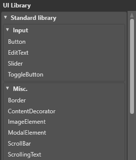

UI エディター
初級 アーティスト デザイナー
UI エディターを使って、UI ページや UI ライブラリを編集することができます。
UI エディターを開くには、アセットビューで、UI Page または UI Libraries アセットをダブルクリックします。
すると、UI エディターが開きます。

UI エディターの構成は以下の通りです。
UI ライブラリのリスト（A）。UI に追加することができる要素（ボタンやグリッドなど）が含まれます。
UI ページの要素のビジュアルツリー（B）。
ゲームで表示される UI ページのプレビュー（C）。
UI 要素のプロパティを編集するためのプロパティグリッド（D）。
UI ライブラリ
UI ライブラリには、UI ページで使用し再利用できる UI 要素（グリッド、ボタン、スライダーなど）が含まれています。これらは、シーンエディタのプレハブ と同様に動作します。

詳細については、UI ライブラリ を参照してください。
ビジュアルツリー
ビジュアルツリー（Visual Tree） は、UI ページに含まれる要素とその階層を表示します。これは、シーンエディターのエンティティツリーに似ています。
かっこ内の数字は、要素が持つ子の数を示しています。ボタンなどの一部の要素は、子を 1 つしか持つことができません。
ビジュアルツリーの要素の順序を変えるには、それらをドラッグ＆ドロップします。
要素を新しいグループに移動するには、要素を右クリックして[グループ化]を選択します。 例えば、新しいグリッドを作成してそこに要素を移動させるには、要素を右クリックして [Group into] > [Grid」を選択します。

UI プレビュー
UI プレビューは、ランタイムに表示される UI のプレビューを表示します。デザインの解像度が、編集したアセットを使用する UI コンポーネントと同じであると想定して、ゲーム内のレンダリングと同等のものが表示されます。
既定では、UI はビルボードであり、常にカメラに面を向けています。UI ビューカメラは**平行投影（orthographic）**です（カメラを参照）。
プレビューでは、画像編集アプリケーションと同じように、要素の選択、移動、サイズ変更が可能です。

コントロール
| アクション | コントロール |
|---|---|
| Pan | マウスの中ボタンを押しながらマウスを移動 |
| Zoom | マウスホイール |
| Speed up pan/zoom | シフトを押しながらパンやズームをする |
ツールオプション
選択ツールの色とサイズを変更するには、UI エディターのツールバーで、 をクリックします。
Note
これらのオプションは、実行時における UI の表示には影響しません。

Guideline: 余白までの距離を示す線の幅を変更します（ピクセル単位）。
Highlight: 要素の上にマウスを移動したときに表示されるハイライトの幅を変更します。
Selection: 選択範囲のハイライトの幅を変更します。
Sizing: 要素のサイズを変更するために表示される、選択範囲の端にあるボックスのサイズを変更します。
UI ページに UI 要素を追加する
要素（グリッドやボタンなど）を追加するには、要素を UI ライブラリから UI ページやビジュアルツリーにドラッグします。

プロパティ
要素のプロパティは、プロパティグリッドで確認し編集することができます。
プロパティは、概観（Appearance）, 振る舞い（Behavior）, レイアウト（Layout）, その他（Misc） の順に表示されます。
概観（Appearance）
よく使われるプロパティには、BackgroundColor, Opacity, Visibility, ClipToBounds などがあります。
振る舞い（Behavior）
よく使われるプロパティに、CanBeHitByUser（要素がタッチイベントに反応するかどうか）があります。

レイアウト（Layout）
よく使われるプロパティには、要素のサイズ（Height, Width, Depth）、配列（HorizontalAlignment, VerticalAlignment, DepthAlignement）、自身の Margin があります。

その他（Misc）
このカテゴリーには、要素の Name（名前）だけがあります。